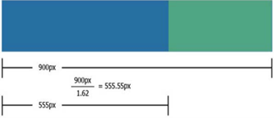
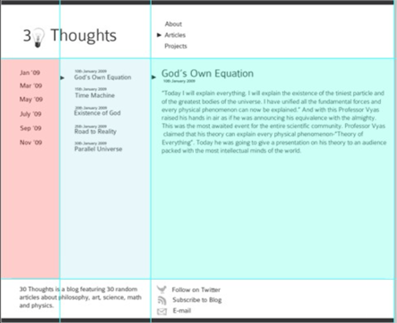
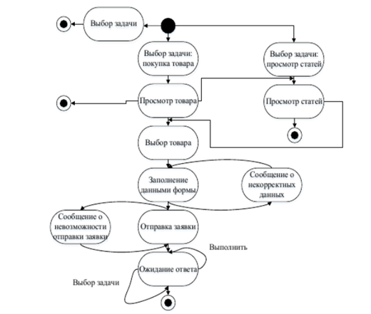

Роль математики в проектрирование сайта
Математические методы при разработке сайтов – это не просто абстрактные формулы, а практический механизм, который помогает перевести создание интерфейса в сферу точных расчётов. В современной веб-разработке математика становится тем невидимым каркасом, на котором держится устойчивость структуры, логичность навигации и эстетическое восприятие ресурса. Научные алгоритмы помогают разработчикам решать задачи распределения визуальной нагрузки и снижения когнитивной нагрузки.
Гармония золотого сечения
Золотое сечение — это фундаментальная пропорция, выраженная числом φ ≈ 1,618, которая широко применяется для создания гармоничных макетов. Использование этого правила позволяет разделить рабочую область на сегменты. В проектировании это помогает определить идеальные размеры для основной части и боковой панели, создавая визуальный порядок. Например, расчет ширины основного контейнера по формуле золотого сечения гарантирует, что пользователь будет сфокусирован на главной информации. Этот метод используется в искусстве и в цифровой среде, остается одним из лучших способом достижения композиционного равновесия

Схема разметки страниц
Правило «Золотого сечения» применяется для построения макета страницы. Для примера, возьмем обычную разметку из 2 колонок с фиксированной шириной (рисунок 2). Допустим, общая ширина контента будет 900px, делим это число на 1,62, в результате получим 555,55px (555px для удобства) – это и будет ширина основной колонки с контентом. Далее вычислим ширину боковой колонки: 900px – 555px = 345px.
Ритм чисел Фибоначчи
Последовательность Фибоначчи представляет собой математический ряд, где каждое число является суммой двух предыдущих, что служит основой для построения типографики. В веб-разработке эти числа используются для настройки размеров шрифтов и отступов, создавая четкий и логичный визуальный ритм на странице. Применение этой прогрессии позволяет разработчику обосновать выбор размера каждого заголовка, что исключает визуальный хаос. Гармоничные интервалы между блоками, рассчитанные по данной методике, создают ощущение структурированности и «воздуха» в интерфейсе. Таким образом, числа Фибоначчи позволяют связать все элементы дизайна в единую систему, максимально приятную для восприятия пользователем.

Макет сайта созданный на основе веб-дизайна по Фибоначчи
На рисунке представлен макет, созданный на основе веб-дизайна по Фибоначчи. Каждый столбец соответствует числу последовательности. Для этого дизайна, используется база шириной 90 пикселей. Эта база шириной затем умножается на число Фибоначчи, чтобы получить общую ширину столбца. Размер шрифта также соответствует числу Фибоначчи. Заголовок страницы имеет размер 55px; заголовок статьи 34px; а основной текст 21px.
Логика теории графов
Теория графов рассматривает структуру сайта как совокупность узлов и связей, где страницы являются вершинами, а ссылки — ребрами. Математический анализ такого графа позволяет проектировать эффективную навигацию, исключая создание изолированных страниц и сокращая путь пользователя. Одним из важнейших показателей здесь является диаметр графа, который не должен превышать трех переходов для соблюдения правила «трех кликов». Использование алгоритмов поиска кратчайшего пути помогает выявить архитектурные ошибки еще на этапе прототипирования. Профессионально выстроенный граф навигации гарантирует, что пользователь всегда будет понимать свое местоположение на сайте и легко найдет нужную ему информацию.

Пример Графа
Цифровые цветовые модели
Для точного описания цвета на веб-сайте используются различные цветовые модели, каждая имеет свои особенности и область применения.
RGB
Цветовая модель, основанная на смешении красного, зеленого и синего света. Это основная модель для всех экранных устройств. В веб-дизайне цвета задаются либо десятичными значениями от 0 до 255, либо шестнадцатеричными кодами (HEX). Преимущество модели максимально широкий охват цветов, воспроизводимых на мониторах
HSL
Цветовая модель, ориентированная на восприятие человека. Она описывает цвет через три параметра: оттенок (0–360°), насыщенность (0–100 %) и светлоту (0–100 %). Модель HSL широко используется в веб-дизайне: дизайнер может легко подобрать оттенок, а затем регулировать его насыщенность и светлоту, не меняя базового тона.
LAB
Равномерная цветовая модель, независимая от устройств. Обеспечивает наиболее точную цветопередачу, однако в веб-дизайне ее применение ограничено из-за недостаточной поддержки браузерами.
HSV/HSB
Модель, похожая на HSL, но с другим определением яркости. Используется в графических редакторах и для создания цветовых схем.
Навигационные задачи цвета
| Задача |
Роль цвета |
| Визуальная иерархия |
Разделение контента на главные и второстепенные блоки с помощью контраста. |
| Управление вниманием |
Акцентирование внимания на кнопках (CTA) и важных уведомлениях системы. |
| Юзабилити |
Цветовое кодирование состояний элементов (активный, ошибка, посещенная ссылка). |
Формула цвета: 60-30-10
Правило 60-30-10: правило, которым интуитивно пользовались во все времена и продолжают осознанно пользоваться сейчас. Изображения, сбалансированные по этому принципу, создают чувство равновесия и позволяют глазу комфортно перемещаться от одной точки к другой. И, вдобавок ко всему, такая схема очень проста в использовании. Итак, 60% для доминирующего оттенка – для фона страницы, основных панелей и фоновых элементов; 30% для вторичного цвета – применяемый для шапки сайта, боковых панелей, карточек контента и меню навигации; 10% выделяющий ключевые элементы взаимодействия: кнопки призыва к действию, ссылки, иконки, уведомления.
Пример сайта спроектированного по методу 60-30-10
Например сайт "Canva": Фон — белый (60%), элементы интерфейса — голубой/синий (30%), кнопки и ключевые элементы — фиолетовый (10%)
Заключение
В заключение, математические методы являются не просто вспомогательным инструментом, а основной основой для качественного проектирования современного пользовательского интерфейса веб-сайта. Использование математических атрибутов, таких как золотое сечение, последовательность Фибоначчи и теория графов, может трансформировать процесс веб-разработки из субъективного в математически обоснованный. Благодаря математическим элементам разработчики получают представление о том, как пользователи будут взаимодействовать с их сайтом, и, следовательно, могут минимизировать когнитивную нагрузку на пользователей до начала взаимодействия.
Математика позволяет создавать множество различных веб-решений для множества проблем одновременно. Используя геометрические зависимости, математика может помочь навести порядок в хаосе. Создавая связи между узлами, математика формирует логические системы навигации. Используя математику для генерации цветов с помощью векторных моделей, она создает единые цветовые палитры. Использование точных наук в веб-разработке позволяет нам создавать более качественный и доступный цифровой контент. Поскольку веб-индустрия будет продолжать расти, использование математических методов также будет увеличиваться из-за сложности, связанной с проектированием интерфейсов. Использование математики всегда будет лучшим способом гарантировать долговечность цифрового продукта и его конкурентоспособность на этом быстро развивающемся технологическом рынке.